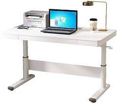
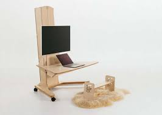

Rising Desks

Laptop on Desk
Perfect for those who use laptops, providing a comfortable elevated workspace.

Floor Standing Desk
For users who prefer a versatile, standalone desk that can be adjusted to different heights.
Floor Standing Desk
For users who prefer a versatile, standalone desk that can be adjusted to different heights.
Floor Standing Desk
For users who prefer a versatile, standalone desk that can be adjusted to different heights.